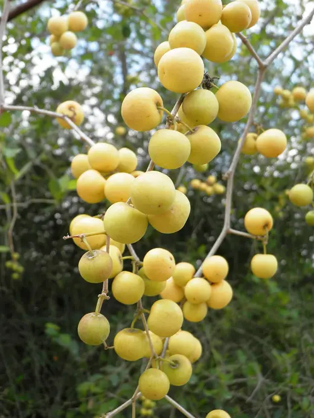

Sidr fruit
Sidr fruit is a wild fruit you can forage from November to April in Hajar Mountains and wadis, Cities, farms and oases, East coast and Desert, dunes and gravel plains. Thorny tree of wadis, farms and old towns with glossy oval leaves (three veins from the base) and round fruits that ripen yellow to brown, like tiny apples.

When is sidr fruit in season in the UAE?
Sidr fruit is usually in season November to April. Timing shifts with weather, latitude and altitude.
Where does sidr fruit grow in the UAE?
Sidr fruit grows across the UAE. Regions: Hajar Mountains and wadis, Cities, farms and oases, East coast, Desert, dunes and gravel plains.
How do you recognise sidr fruit?
Thorny tree of wadis, farms and old towns with glossy oval leaves (three veins from the base) and round fruits that ripen yellow to brown, like tiny apples.
How do you harvest sidr fruit?
Pick only ripe fruit that comes away easily, and only with the owner's permission: most trees and palms belong to a farm, a family or the municipality.
How do you eat sidr fruit?
Ripe fruit fresh as a snack, or dried and eaten like dates.
How do you store sidr fruit?
Dry in the sun.
What is sidr fruit good for?
Vitamin C, Calories.
What can you cook with sidr fruit?
- Sidr fruit snack: Ripe nabq eaten fresh or sun-dried.